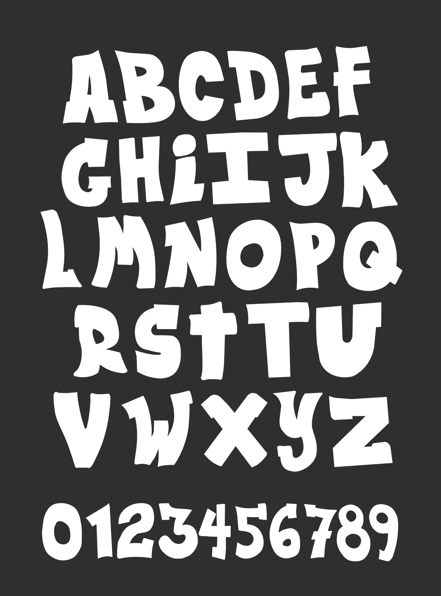

WUSA Designs
During the Summer of 2026, I was a Graphic Design Co-op at the Waterloo Undergraduate Student Association (WUSA). I created a variety of graphics and had the opportunity to bring my illustration style into some of my projects.
Co-op Toolkit
One of my earlier projects was to create illustrations and layout a co-op toolkit document. The toolkit was a resource for students to use if they ahd trouble with any aspect of their co-op terms. I created the main cover as well as matching illsutrations for each section.


WUSA Insider Poster
This poster was created to promote the WUSA Insider, a newsletter that students can subscribe to. The poster went through a series of big changes before the final version was approved.
The final poster (left) - the 2nd version (middle) - the 1st version (right)


OSAP and Moving Out Graphics
These were 2 individual projects, with the OSAP graphics coming first. The OSAP graphics were a new style for me, and they set a new tone for future projects in the term.


Custom Illustrations
Some of my projects at WUSA allowed me to use my personal illustration style.
First Year Stickers
This was my first time doing illustrations in this style. Even though I was still learning, my supervisor trusted me to create these illustrations for a sticker set that would be given to first year students.


Graffiti Stickers
I had the opportunity to create a series of unique graffiti style stickers. They were used for a stickerbomb styled wrap for a cooler to be used at WUSA events. The stickers were all hand-drawn in Photoshop.


Welcome Week Lettering
One of my biggest projects of the term, I created an entire alphabet of custom letters and numbers to be used for all of the future welcome week graphics.
